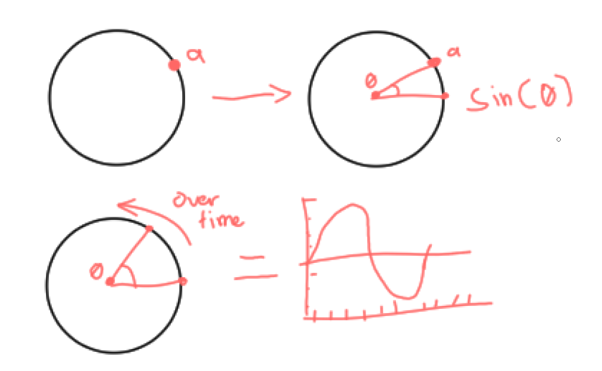
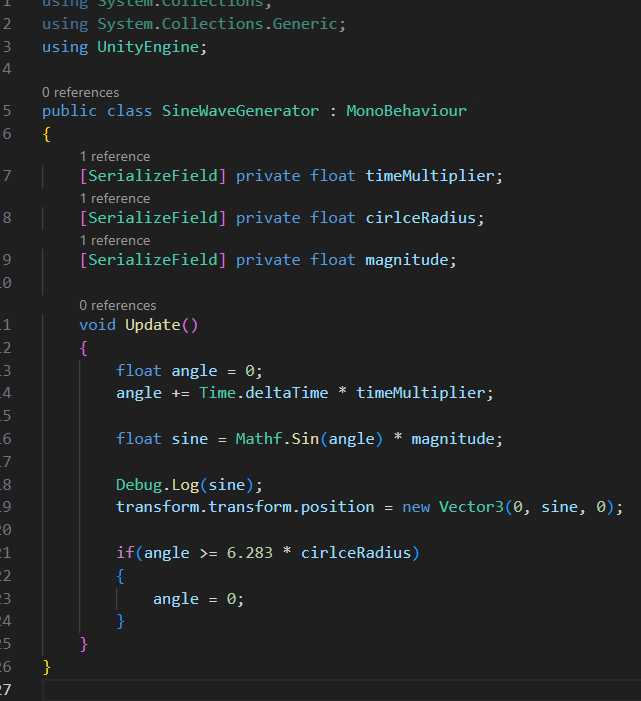
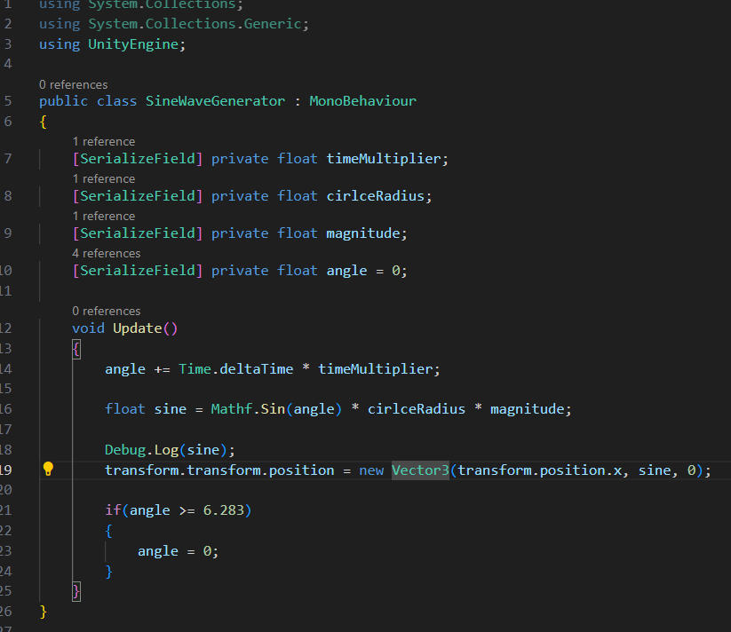

Generating a sine wave in unity
Trying to figure it out myself

I've always wondered what is the use of the math they teach us at school. Even now I never used the pythagoras theorem, calculus, and trigonometry to solve any real life problems. I've always thought that maybe only smart people with smart problems can use this smart solutions. Up until I used trigonometry in game development. It's really fascinating to figure out how these math functions can help me to manipulate values to a certain way that I want. Today I want to generate a sine wave from scratch with no tutorial until I give up. Why suffer you say? First of all I love figuring out things like these and another one is it's a great learning experience that will stimulate your problem solving skills. I also suggest you do these kinds of "training" you might like it more than you think. So why the sine wave? Honestly the reason was because I always hear this sine wave every time I watch a game dev video and I got curious as to what and why it is used. In my research I figured out that sine can be seen in many aspect in real life from springs, electricity, or even sound. Aside from that the sine wave have this ease in and ease out motion that gives the illusion of naturallity if that's even a word. It's more natural than per se a linear curve. This ease in and ease out motion is widely used in animation and world generation to make it more "natural" to our eyes.
A little bit of theory

Now the boring stuff. You can skip this part if you want to but tbh you will miss a lot because
you probably wouldn't understand most of the things further down there if you skip this. With
that being said what even is sine google said it is the ratio of the opposite and hypotenuse
of an angle. Okay all of that magic math words probably went through your head and honestly I also
don't get it but based on my research we can get a sine wave with these steps.
1. Picking a point in the circumference of
a circle.
2. After picking a point in the circle we can also say that we now have an angle. Here for example I picked
this point a on the circumference of the circle no I have an angle from that point to the middle of the circle and then
to the 0 degrees of the circle.
3. Lastly we just need to perform the sine function into the angle. Also if we
want a wave we need to do this multiple times with each iteration we move the point along the circle.
Let's jump into it
Now for the fun stuff actually implementing the theory.I know that some of you now have an idea on how to implement this on code after reading the theory. After reading and researching this it made me realize that it's not that complicated. This is my first iteration. First we declare the angle variable and increment it over time with the time multiplier as it's multiplier so we can control how fast it oscillates. Now for the sine function we just pass the angle there with a magnitude as it's multiplier to make it easier to see. The number 6.283 is the total radians(you can think of these as the points in the circumference of the circle) in the circle. So after we circled the while circle we just go back to the start hence angle = 0.
As you can see it just jitters and it's not exactly how sine movement move. after some debugging I found the problem. At the start of the update function at line 13 I reset the angle variable every time resulting that jittery motion because it resets the angle every time. Also after further testing I realized that the circle radius should not be multiplied on the total radians but instead multiplied to the sine product instead. With the fixes implemented here are the results.
The sine wave generator works perfectly. We can alter the serialized fields to have different variation of the sine wave. We can increase the circle radius to increase the amplitude or we can increase the time to increase the rate of oscillation.
Wrapping things up
Writing a sine wave generator is actually much more simpler that I thought. While this project is not much of a challenge I plan to continue posting more of these math to programming things in the future after I made a youtube video out of this. Maybe my next one will be arrow movement and projectile movement in general. If you wish to be updated please come back to this blog!